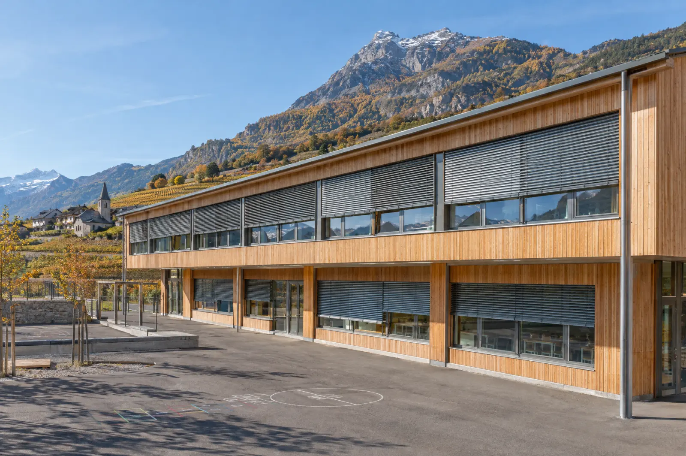

Gammes Stoma et Isotra
Lames de 70, 90 mm, 65Z et 80Z
Lames plates, en Z, en S ou boudinées, avec ou sans système autobloquant.
- Autobloquant
- Motorisable
Accueil / Produits / Stores extérieurs
Pour régler la lumière à la lame près, fermer complètement une baie ou sécuriser une vitrine. Toutes les grandes marques, motorisables à souhait.

Ils arrêtent la chaleur avant la vitre et dosent la lumière avec précision.
Gammes Stoma et Isotra
Lames plates, en Z, en S ou boudinées, avec ou sans système autobloquant.
Façades exposées
Guidage renforcé là où le vent l’exige, en plaine comme en altitude.
Tout métal
Toute la mécanique est intégrée aux coulisses : la solution des écoles et des bâtiments publics.
Asymétriques
Lamelles orientables pour les embrasures de forme complexe, par moteur, radio ou panneau solaire.

Pour fermer intégralement une baie : obscurité totale et sécurité selon les modèles.
Gamme Rufalex
Du volet roulant classique aux modèles de sécurité renforcée.
Gamme Regazzi
Volets roulants en aluminium pour le neuf et la rénovation.
Stores empilables
Lames qui s’empilent au lieu de s’enrouler : un caisson plus petit pour les grandes baies.
Sécurité
Volet roulant de sécurité pour rez-de-chaussée et résidences secondaires.
Asymétriques
Volet roulant pour embrasures géométriquement complexes, solaire en option.
Pour les garages, les commerces et les devantures.
Rufalex
Portes roulantes de garage ou de sécurité, avec ou sans caisson, motorisées, sécurités intégrées.
Stobag
Épaisses lamelles en aluminium extrudé, transmission par chaîne, autobloquant, moteur ou manivelle.